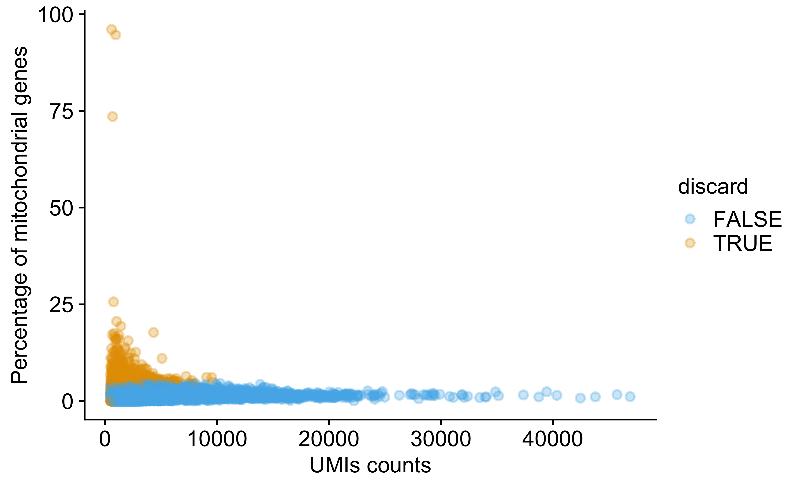
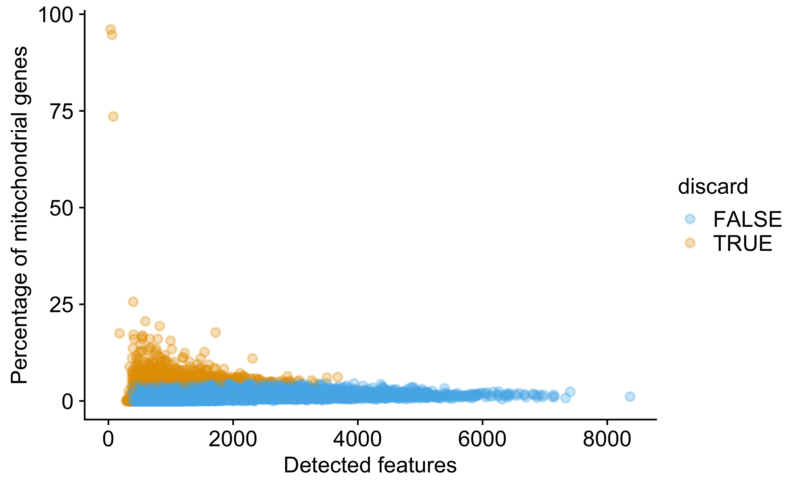
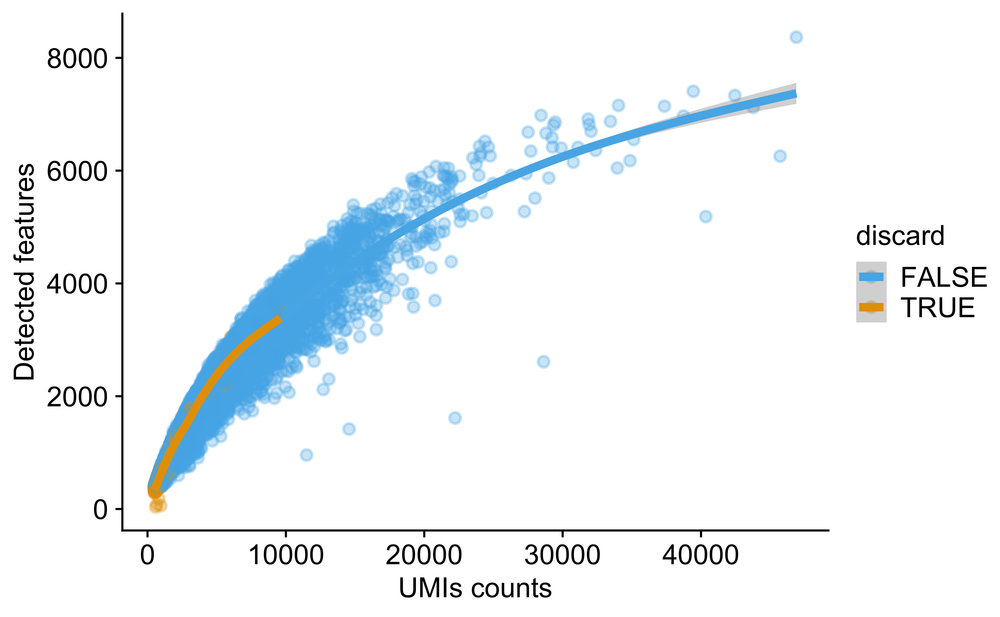

10x RNA-seq analysis of huNSG cancer
Demultiplexing with hashtag oligos (HTOs)
Francesc Castro-Giner
February 07, 2025
Last updated: 2025-02-07
Checks: 7 0
Knit directory: sznurkowska-met-paths/
This reproducible R Markdown analysis was created with workflowr (version 1.7.1). The Checks tab describes the reproducibility checks that were applied when the results were created. The Past versions tab lists the development history.
Great! Since the R Markdown file has been committed to the Git repository, you know the exact version of the code that produced these results.
Great job! The global environment was empty. Objects defined in the global environment can affect the analysis in your R Markdown file in unknown ways. For reproduciblity it’s best to always run the code in an empty environment.
The command set.seed(20250206) was run prior to running
the code in the R Markdown file. Setting a seed ensures that any results
that rely on randomness, e.g. subsampling or permutations, are
reproducible.
Great job! Recording the operating system, R version, and package versions is critical for reproducibility.
Nice! There were no cached chunks for this analysis, so you can be confident that you successfully produced the results during this run.
Great job! Using relative paths to the files within your workflowr project makes it easier to run your code on other machines.
Great! You are using Git for version control. Tracking code development and connecting the code version to the results is critical for reproducibility.
The results in this page were generated with repository version 30d581d. See the Past versions tab to see a history of the changes made to the R Markdown and HTML files.
Note that you need to be careful to ensure that all relevant files for
the analysis have been committed to Git prior to generating the results
(you can use wflow_publish or
wflow_git_commit). workflowr only checks the R Markdown
file, but you know if there are other scripts or data files that it
depends on. Below is the status of the Git repository when the results
were generated:
Ignored files:
Ignored: .Rhistory
Ignored: .Rproj.user/
Ignored: data/patients/
Ignored: data/resources/
Ignored: data/rnaseq/
Ignored: data/seer/
Ignored: output/p26532_o26674/
Ignored: output/p26532_o28268/
Ignored: output/p26532_o28268_o34980/
Ignored: output/p26532_o34980/
Untracked files:
Untracked: analysis/br16-10x_rnaseq-cancer_cells-main.Rmd
Untracked: analysis/br16-10x_rnaseq-qc.Rmd
Untracked: analysis/mvt1-tumor-10x_rnaseq-qc.Rmd
Untracked: analysis/templates/
Untracked: code/R-functions/
Untracked: configuration/
Untracked: workflowr_update.R
Unstaged changes:
Modified: .gitignore
Modified: sznurkowska-met-paths.Rproj
Note that any generated files, e.g. HTML, png, CSS, etc., are not included in this status report because it is ok for generated content to have uncommitted changes.
These are the previous versions of the repository in which changes were
made to the R Markdown
(analysis/nsg-normal-10x_rnaseq-qc.Rmd) and HTML
(docs/nsg-normal-10x_rnaseq-qc.html) files. If you’ve
configured a remote Git repository (see ?wflow_git_remote),
click on the hyperlinks in the table below to view the files as they
were in that past version.
| File | Version | Author | Date | Message |
|---|---|---|---|---|
| Rmd | 30d581d | Francesc Castro-Giner | 2025-02-07 | Add nsg normal analysis |
1 Load libraries, additional functions and data
Setup environment
knitr::opts_chunk$set(results='asis', echo=TRUE, message=FALSE, warning=FALSE, error=FALSE, fig.align = 'center', fig.width = 3.5, fig.asp = 0.618, dpi = 600, dev = c("png", "pdf"))
options(stringsAsFactors = FALSE)
set.seed(1011110)Load packages
library(tidyverse)
library(showtext)
library(foreach)
library(DT)
library(knitr)
library(kableExtra)
library(cowplot)
library(colorblindr)
library(ggbeeswarm)
library(arsenal)
library(scater)
library(DropletUtils)
library(Seurat)
library(scran)
library(scDblFinder)
library(BiocSingular)
# library(ComplexHeatmap)
# library(circlize)
# library(RColorBrewer)
# library(DT)Load ggplot theme
source("./configuration/rmarkdown/ggplot_theme.R")Clean files generated in previous runs
rmd_file <- current_input()
if(!is.null(rmd_file)) {
figures_dir <- file.path('./docs/figure',rmd_file)
if(dir.exists(figures_dir)) {
unlink(file.path(figures_dir, "*"))
}
}2 Introduction
3 Description
4 Data wrangling
Load hashtag metadata
hash_annot <- read_csv(params$hash_annot) %>% dplyr::select(sample_alias, fb_id, additional_fields)
# Split additional fields
x <- str_split(hash_annot$additional_fields, ";")
add_fields <- foreach(y = x, .combine = rbind) %do% {
res <- str_split(y, "=", simplify = T)
res[,2] %>% set_names(res[,1])
}
hash_annot <- cbind(hash_annot, add_fields) %>%
dplyr::select(-additional_fields) %>%
rename('sample_alias' = 'Sample')
# There is a problem in the field of sample
hash_annot <- hash_annot %>%
mutate(Sample = ifelse(Sample == 'NSG lungs and livers',
'huNSG_ms3_Plate_4120_1',
Sample))Load sample metadata
sample_annot <- read_csv(params$sample_annot) %>%
dplyr::select(sample_alias, mouse_id) %>%
rename('sample_alias' = 'Sample')
hash_annot <- hash_annot %>%
left_join(sample_annot)Load SCE file information
# Load files, using system instead of list.files for speed reasons
sce_files <- system(paste("find", params$cellranger_count_dir, "-maxdepth 2 -type f -regex '.*/sce[.]rds$'"), intern = TRUE) %>% sort
names(sce_files) <- sce_files %>% dirname %>% basenameLoad perCellQCMetrics from SCE files
use_sce_file <- sce_files[1]
cell_qc_metrics <- foreach(use_sce_file = sce_files, .combine = rbind) %do% {
sce <- readRDS(use_sce_file)
colData(sce)
} %>% data.frame
rm(sce)5 Quality control (by batch)
5.1 Selected QC metrics
We identify low-quality cells using the following QC metrics :
- Library size : the total sum of UMI counts across all relevant features. Cells with small library sizes are of low quality as the RNA has been lost at some point during library preparation.
- Number of detected features : number of genes with non-zero counts for that cell. Any cell with very few expressed genes is likely to be of poor quality as the diverse transcript population has not been successfully captured.
- Proportion of mitochondrial genes : High proportions are indicative of poor-quality cells (Islam et al. 2014; Ilicic et al. 2016), presumably because of the loss of cytoplasmic RNA from perforated cells.
5.2 Detect low quality cells
We use adaptive thresholds for each selected QC metrics. This assumes that most of the dataset consists of high quality cells and identify cells that are outliers for the selected QC metrics based on the median absolute deviation (MAD) from the median value of each metric across all cells. By default, we consider a value to be an outlier if it is more than 3 MADs from the median in the “problematic” direction. This is loosely motivated by the fact that such a filter will retain 99% of non-outlier values that follow a normal distribution.
In cases were multiple batches are involved, each with different sequencing coverage, we should consider to apply the adaptive threshold to each batch separately. That said, the use of batch= involves the stronger assumption that most cells in each batch are of high quality. If an entire batch failed, outlier detection will not be able to act as an appropriate QC filter for that batch. In such cases, it is better to compute a shared median and MAD from the other batches and use those estimates to obtain an appropriate filter threshold for cells in the problematic batches.
discard_reasons <- perCellQCFilters(
cell_qc_metrics,
sum.field = "sum",
detected.field = "detected",
sub.fields = c("subsets_Mito_percent"),
batch=cell_qc_metrics$Sample,
nmads = 3
)
cell_qc_metrics <- cbind(dplyr::select(cell_qc_metrics, Sample:total), discard_reasons)
thresholds <- cbind(
`Library size` = attr(discard_reasons$low_lib_size, "thresholds")['lower',],
`Number of detected features size` = attr(discard_reasons$low_n_features, "thresholds")['lower',],
`Mitochondrial proportion` = attr(discard_reasons$high_subsets_Mito_percent, "thresholds")['higher',]
) %>% data.frame(check.names = FALSE) %>% rownames_to_column('Sample')
res <- rbind(
c(`Reason` = 'Low library size', `Number of cells` = sum(discard_reasons$low_lib_size)),
c(`Reason` = 'Low number of detected features size', `Number of cells` = sum(discard_reasons$low_n_features)),
c(`Reason` = 'High mitochondrial proportion', `Number of cells` = sum(discard_reasons$high_subsets_Mito_percent)),
c(`Reason` = 'Total removed', `Number of cells` = sum(discard_reasons$discard)),
c(`Reason` = 'Cells remaining', `Number of cells` = sum(!discard_reasons$discard))
) %>% data.frame(check.names = FALSE) %>%
mutate(
`Number of cells` = as.numeric(`Number of cells`),
`Percentage of cells` = round(100*(`Number of cells` / nrow(cell_qc_metrics)), 2)
) %>%
dplyr::select(Reason, `Number of cells`, `Percentage of cells`)
res %>%
kbl(caption = 'Number of cells removed') %>%
kable_paper(bootstrap_options = c("striped", "hover", "condensed"), full_width = F)| Reason | Number of cells | Percentage of cells |
|---|---|---|
| Low library size | 0 | 0.00 |
| Low number of detected features size | 59 | 0.43 |
| High mitochondrial proportion | 716 | 5.22 |
| Total removed | 763 | 5.56 |
| Cells remaining | 12954 | 94.44 |
tab1 <- tableby(Sample ~ low_lib_size + low_n_features + high_subsets_Mito_percent + discard, data=cell_qc_metrics)
mylabels <- list(low_lib_size = "Low UMI counts", low_n_features = "Low number of detected features size", high_subsets_Mito_percent = "High mitochondrial proportion", discard = "Total removed")
sum_tab <- summary(tab1, labelTranslations = mylabels, cat.simplify=TRUE) %>% as.data.frame
colnames(sum_tab)[1] <- 'var'
sum_tab <- sum_tab %>% column_to_rownames('var') %>% t()
sum_tab %>%
kbl(caption = 'Number of cells removed per sample') %>%
kable_paper(bootstrap_options = c("striped", "hover", "condensed"), full_width = F)| Low UMI counts | Low number of detected features size | High mitochondrial proportion | Total removed | |
|---|---|---|---|---|
| huNSG_ms3_Plate_4120_1 (N=13717) | 0 (0.0%) | 59 (0.4%) | 716 (5.2%) | 763 (5.6%) |
| Total (N=13717) | 0 (0.0%) | 59 (0.4%) | 716 (5.2%) | 763 (5.6%) |
thresholds %>%
kbl(caption = 'Thresholds applied by batch') %>%
kable_paper(bootstrap_options = c("striped", "hover", "condensed"), full_width = F)| Sample | Library size | Number of detected features size | Mitochondrial proportion |
|---|---|---|---|
| 1 | 458.0699 | 392.5895 | 4.55839 |
tab_all <- cell_qc_metrics %>%
group_by(Sample) %>%
summarise(`Library size` = median(sum), `Number of detected features` = median(detected), `Mitochondrial proportion` = median(subsets_Mito_percent))
tab_pass <- cell_qc_metrics %>%
filter(!discard) %>%
group_by(Sample) %>%
summarise(`Library size` = median(sum), `Number of detected features` = median(detected), `Mitochondrial proportion` = median(subsets_Mito_percent))
tab_full <- full_join(tab_all, tab_pass, by = 'Sample')
colnames(tab_full) <- colnames(tab_full) %>% gsub("\\.[xy]", "", .)
tab_full %>%
kbl(caption = 'Median values for each quality metric') %>%
kable_paper(bootstrap_options = c("striped", "hover", "condensed"), full_width = F) %>%
add_header_above(c(" ", "All cells" = 3, "Filtered" = 3))|
All cells
|
Filtered
|
|||||
|---|---|---|---|---|---|---|
| Sample | Library size | Number of detected features | Mitochondrial proportion | Library size | Number of detected features | Mitochondrial proportion |
| huNSG_ms3_Plate_4120_1 | 3511 | 1844 | 1.610905 | 3648.5 | 1901 | 1.551829 |
5.3 Tresholds
thresholds %>%
kbl(caption = 'Thresholds applied by batch') %>%
kable_paper(bootstrap_options = c("striped", "hover", "condensed"), full_width = F)| Sample | Library size | Number of detected features size | Mitochondrial proportion |
|---|---|---|---|
| 1 | 458.0699 | 392.5895 | 4.55839 |
thresholds %>%
pivot_longer(-Sample, values_to = 'Threshold') %>%
ggplot(aes(Sample, Threshold)) +
geom_col() +
facet_wrap(vars(name), ncol = 1, scales = 'free_y') +
theme(axis.text.x = element_text(angle = 90, vjust = 0.5, hjust=1)) +
labs(
x = '',
title = 'Thresholds applied by batch'
)5.4 Diagnostic plots
cell_qc_metrics %>%
arrange(discard) %>%
ggplot(aes(Sample, sum, color = discard)) +
geom_violin(colour = "gray60", alpha = 0.2, scale = "width", width = 0.8) +
geom_quasirandom(width=0.4, groupOnX=TRUE, bandwidth=1, size = 1, alpha = 0.4) +
# geom_hline(yintercept = attr(discard_reasons$low_lib_size, "thresholds")[['lower']], lty = 3) +
scale_color_OkabeIto(order = c(2, 1)) +
scale_y_log10() +
theme(axis.text.x = element_text(angle = 90, vjust = 0.5, hjust=1)) +
labs(
x = '',
y = 'UMIs counts',
title = 'Number of UMIs'
)
cell_qc_metrics %>%
arrange(discard) %>%
ggplot(aes(Sample, detected, color = discard)) +
geom_violin(colour = "gray60", alpha = 0.2, scale = "width", width = 0.8) +
geom_quasirandom(width=0.4, groupOnX=TRUE, bandwidth=1, size = 1, alpha = 0.4) +
# geom_hline(yintercept = attr(discard_reasons$low_n_features, "thresholds")[['lower']], lty = 3) +
scale_color_OkabeIto(order = c(2, 1)) +
scale_y_log10() +
theme(axis.text.x = element_text(angle = 90, vjust = 0.5, hjust=1)) +
labs(
x = '',
y = 'Detected features',
title = 'Number of genes'
)
cell_qc_metrics %>%
arrange(discard) %>%
ggplot(aes(Sample, subsets_Mito_percent, color = discard)) +
geom_violin(colour = "gray60", alpha = 0.2, scale = "width", width = 0.8) +
geom_quasirandom(width=0.4, groupOnX=TRUE, bandwidth=1, size = 1, alpha = 0.4) +
# geom_hline(yintercept = attr(discard_reasons$high_subsets_Mito_percent, "thresholds")[['higher']], lty = 3) +
scale_color_OkabeIto(order = c(2, 1)) +
theme(axis.text.x = element_text(angle = 90, vjust = 0.5, hjust=1)) +
labs(
x = '',
y = 'Percentage of mitochondrial genes',
title = 'Mitochondrial proportion'
)
cell_qc_metrics %>%
arrange(discard) %>%
ggplot(aes(Sample, subsets_Ribo_percent, color = discard)) +
geom_violin(colour = "gray60", alpha = 0.2, scale = "width", width = 0.8) +
geom_quasirandom(width=0.4, groupOnX=TRUE, bandwidth=1, size = 1, alpha = 0.4) +
scale_color_OkabeIto(order = c(2, 1)) +
theme(axis.text.x = element_text(angle = 90, vjust = 0.5, hjust=1)) +
labs(
x = '',
y = 'Percentage of ribosomal genes',
title = 'Ribosomal proportion'
)
cell_qc_metrics %>%
# arrange(discard) %>%
ggplot(aes(sum, subsets_Mito_percent, color = discard)) +
geom_point(alpha = 0.3, size = 1) +
scale_color_OkabeIto(order = c(2, 1)) +
labs(
x = 'UMIs counts',
y = 'Percentage of mitochondrial genes'
)
cell_qc_metrics %>%
# arrange(discard) %>%
ggplot(aes(detected, subsets_Mito_percent, color = discard)) +
geom_point(alpha = 0.3, size = 1) +
scale_color_OkabeIto(order = c(2, 1)) +
labs(
x = 'Detected features',
y = 'Percentage of mitochondrial genes'
)
cell_qc_metrics %>%
# arrange(discard) %>%
ggplot(aes(sum, detected, color = discard)) +
geom_point(alpha = 0.3, size = 1) +
scale_color_OkabeIto(order = c(2, 1)) +
labs(
x = 'UMIs counts',
y = 'Detected features'
) +
geom_smooth()
5.5 Remove cells
use_sce_file <- sce_files[1]
r.rm <- foreach(use_sce_file = sce_files) %do% {
sce <- readRDS(use_sce_file)
filtered_sce_file <- gsub("sce.rds", "sce_filtered.rds", use_sce_file)
x <- colData(sce) %>% data.frame %>% left_join(cell_qc_metrics %>% dplyr::select(Sample, Barcode, discard))
# Add GFP and mCherry expression to colData
# colData(sce) <- cbind(data.frame(colData(sce)), counts(sce[c("GFP", "mCherry"),]) %>% as.matrix %>% t) %>% DataFrame()
sce <- sce[,!x$discard]
saveRDS(sce, filtered_sce_file)
}
rm(sce)
sce_filtered_files <- system(paste("find", params$cellranger_count_dir, "-maxdepth 2 -type f -regex '.*/sce_filtered[.]rds$'"), intern = TRUE) %>% sort
names(sce_filtered_files) <- names(sce_files)6 Demultiplexing with hashtag oligos (HTOs) and doublet detection
Demultiplexing results based on antibodies enrichment and filtering of the data based on HTO assignment. Here we filter out (1) cells with two HTO assigned (doublets) and (2) cells with HTO present that was not used in the experiment.
One limitation of removing doublets based on HTO is that doublets marked with the same HTO are not detected. Here we are also marking cells who have a similar profile to doublets (guilt by association) using scDblFinder::recoverDoublets. While this might not have an effect in samples with cancer only (only one cell type), in an heterogeneous population like the niche, predicted doublets implying multiple cell types are still possible.
sce_sample_name <- names(sce_filtered_files)[1]
dmx_stats <- foreach(sce_sample_name = names(sce_filtered_files), .combine = rbind) %do% {
cat("###", sce_sample_name, "\n\n")
use_sce_file <- sce_filtered_files[[sce_sample_name]]
sce <- readRDS(use_sce_file)
sce$sample_id <- paste(sce$Sample, sce$Barcode, sep = '_')
colnames(sce) <- sce$sample_id
feat_mat <- counts(sce[rowData(sce)$type == 'Gene Expression',])
hto_mat <- counts(sce[rowData(sce)$type == 'Antibody Capture',])
colnames(feat_mat) <- sce$sample_id
colnames(hto_mat) <- sce$sample_id
# Generate Seurat object
data_hashtag <- CreateSeuratObject(counts = feat_mat)
# Normalize RNA data with log normalization
data_hashtag <- NormalizeData(data_hashtag, verbose = FALSE)
# Find and scale variable features
data_hashtag <- FindVariableFeatures(data_hashtag, selection.method = "mean.var.plot", verbose = FALSE)
data_hashtag <- ScaleData(data_hashtag, features = VariableFeatures(data_hashtag), verbose = FALSE)
# Adding HTO data as an independent assay
data_hashtag[["HTO"]] <- CreateAssayObject(counts = hto_mat)
# Normalize HTO data, here we use centered log-ratio (CLR) transformation
data_hashtag <- NormalizeData(data_hashtag, assay = "HTO", normalization.method = "CLR", verbose = FALSE)
# Demultiplex cells based on HTO enrichment
data_hashtag <- HTODemux(data_hashtag, assay = "HTO", positive.quantile = 0.99, kfunc = "kmeans", verbose = FALSE)
# Group cells based on the max HTO signal
# cat("#### HTO enrichment\n\n")
# cat("Visualize enrichment for selected HTOs with ridge plots\n\n")
# Idents(data_hashtag) <- "HTO_maxID"
# RidgePlot(data_hashtag, assay = "HTO", features = rownames(data_hashtag[["HTO"]]), ncol = 2) %>% print
# cat("\n\n")
# Compare number of UMIs for singlets, doublets and negative cells
# cat("#### UMIs comparison\n\n")
# cat("Compare number of UMIs for singlets, doublets and negative cells\n\n")
# Idents(data_hashtag) <- "HTO_classification.global"
# VlnPlot(data_hashtag, features = "nCount_RNA", pt.size = 0.1, log = TRUE) %>% print
# cat("\n\n")
# Compare number of UMIs for singlets, doublets and negative cells
cat("#### HTO heatmap\n\nHeatmap with the expression of the antibodies across the cells. The Negative barcodes have a negligible background signal for any of the antobodies. Multiplets express more than one antibody.\n\n")
HTOHeatmap(data_hashtag, assay = "HTO", ncells = 5000) %>% print
cat("\n\n")
# cat("#### HTO clustering\n\n")
# cat("Generate a two dimensional tSNE embedding for HTOs.\n\n")
# # Calculate a tSNE embedding of the HTO data
# data_hashtag_HTO <- subset(data_hashtag, idents = "Negative", invert = TRUE)
# DefaultAssay(data_hashtag_HTO) <- "HTO"
# data_hashtag_HTO <- ScaleData(data_hashtag_HTO, features = rownames(data_hashtag_HTO), verbose = FALSE)
# data_hashtag_HTO <- RunPCA(data_hashtag_HTO, features = rownames(data_hashtag_HTO), reduction.name = "pcahto", reduction.key = "pcahto_", approx = FALSE, verbose = FALSE)
# data_hashtag_HTO <- RunTSNE(data_hashtag_HTO, reduction = "pcahto", reduction.key = "htoTSNE_", reduction.name = "tsne_hto", check_duplicates = FALSE)
# DimPlot(data_hashtag_HTO, group.by = "hash.ID", cols = palette_OkabeIto[c(6, 1:5, 7, 8)]) %>% print
# cat("\n\n")
# rm(data_hashtag_HTO)
# cat("#### RNA clustering,\n\n")
# cat("Cluster and visualize cells using the usual scRNA-seq workflow, and examine for the potential presence of batch effects. Using top-1000 features for clustering.\n\n")
# data_hashtag_singlet <- subset(data_hashtag, idents = "Singlet")
# # Run PCA on most variable features
# data_hashtag_singlet <- FindVariableFeatures(data_hashtag_singlet, selection.method = "mean.var.plot", verbose = FALSE)
# # Scaling RNA data, we only scale the variable features here for efficiency
# data_hashtag_singlet <- ScaleData(data_hashtag_singlet, features = VariableFeatures(data_hashtag_singlet), verbose = FALSE)
# # Run PCA
# data_hashtag_singlet <- RunPCA(data_hashtag_singlet, features = VariableFeatures(data_hashtag_singlet), verbose = FALSE)
# # We select the top 10 PCs for clustering and tSNE based on PCElbowPlot
# # data_hashtag_singlet <- RunTSNE(data_hashtag_singlet, reduction = "pca", dims = 1:10, verbose = FALSE)
# data_hashtag_singlet <- RunUMAP(data_hashtag_singlet, reduction = "pca", dims = 1:10, verbose = FALSE)
# # Projecting singlet identities on TSNE visualization
# DimPlot(data_hashtag_singlet, group.by = "HTO_classification", cols = palette_OkabeIto) %>% print
# cat("\n\n")
# rm(data_hashtag_singlet)
# Data post-processing
# Annotate sce with HTO classification
colData(sce) <- colData(sce) %>%
data.frame %>%
left_join(data_hashtag@meta.data %>% rownames_to_column('sample_id') %>% dplyr::select(sample_id, starts_with("HTO"))) %>%
mutate(HTO_doublet = HTO_classification.global == 'Doublet') %>%
dplyr::select(-sample_id) %>%
DataFrame
# Detect doublets using guilt by association for unmarked doublets
cat("#### Additional doublet detections\n\n")
cat("One limitation of removing doublets based on HTO is that doublets marked with the same HTO are not detected. Here we are also marking cells who have a similar profile to doublets (guilt by association) using scDblFinder::recoverDoublets. While this might not have an effect in samples with cancer only (only one cell type), in an heterogeneous population like the niche, predicted doublets implying multiple cell types are still possible.\n\n")
sce.hash <- logNormCounts(sce)
dec.hash <- modelGeneVar(sce.hash)
top.hash <- getTopHVGs(dec.hash, n=1000)
sce.hash <- runPCA(sce.hash, subset_row=top.hash, ncomponents=20)
hashed.doublets <- recoverDoublets(sce.hash, use.dimred="PCA", doublets=sce.hash$HTO_doublet, samples=table(sce.hash$HTO_maxID))
sce.hash$proportion <- hashed.doublets$proportion
sce.hash$predicted <- hashed.doublets$predicted
sce.hash <- runTSNE(sce.hash, dimred="PCA")
gridExtra::grid.arrange(
plotTSNE(sce.hash, colour_by="proportion") + ggtitle("Doublet proportions"),
plotTSNE(sce.hash, colour_by="HTO_doublet", point_alpha = 0.6) + ggtitle("Known doublets"),
ggcells(sce.hash) +
geom_point(aes(x=TSNE.1, y=TSNE.2), color="grey") +
geom_point(aes(x=TSNE.1, y=TSNE.2), color="red",
data=function(x) x[x$predicted,]) +
ggtitle("Predicted intra-sample doublets"),
ncol=2
)
cat("\n\n")
rm(sce.hash)
sce$recoverDoublets.proportion <- hashed.doublets$proportion
sce$recoverDoublets.predicted <- hashed.doublets$predicted
# Add HTO annotation
colData(sce) <- colData(sce) %>% data.frame %>%
left_join(hash_annot %>% rename("fb_id" = "HTO_classification")) %>%
DataFrame
# Filter sce, selecting only singlets
sce_f <- sce[,sce$HTO_classification.global == 'Singlet' & !sce$recoverDoublets.predicted]
# Filter sce, removing cells without cell type. It can be the case for hash detected and not used
# sce_f <- sce_f[,!is.na(sce_f$cell_type)]
# Save filtered SCE
dmx_sce_file <- gsub("sce_filtered.rds", "sce_dmx.rds", use_sce_file)
saveRDS(sce_f, dmx_sce_file)
# Clean data
rm(sce_f)
# Return demultiplexing stats
colData(sce) %>% data.frame
}6.1 huNSG_ms3_Plate_4120_1
6.1.1 HTO heatmap
Heatmap with the expression of the antibodies across the cells. The Negative barcodes have a negligible background signal for any of the antobodies. Multiplets express more than one antibody.

6.1.2 Additional doublet detections
One limitation of removing doublets based on HTO is that doublets marked with the same HTO are not detected. Here we are also marking cells who have a similar profile to doublets (guilt by association) using scDblFinder::recoverDoublets. While this might not have an effect in samples with cancer only (only one cell type), in an heterogeneous population like the niche, predicted doublets implying multiple cell types are still possible.

7 HTO classification
dmx_stats_tab <- dmx_stats %>%
mutate(singlets_final = ifelse(HTO_classification.global == 'Singlet' & recoverDoublets.predicted == FALSE, TRUE, FALSE))
tab1 <- tableby(Sample ~ HTO_classification.global + recoverDoublets.predicted + singlets_final, data=dmx_stats_tab, cat.simplify=TRUE)
mylabels <- list(HTO_classification.global = "HTO classification", recoverDoublets.predicted = "Predicted doublets", singlets_final = "Final number of cells")
res_tab <- summary(tab1, labelTranslations = mylabels) %>% as.data.frame
colnames(res_tab)[1] <- 'var'
res_tab <- res_tab %>% column_to_rownames('var') %>% t()
colnames(res_tab) <- colnames(res_tab) %>% gsub(".*;", "", .) %>% gsub("\\*\\*", "", .)
res_tab %>%
kbl(caption = 'Classification of cells based on HTO') %>%
kable_paper(bootstrap_options = c("striped", "hover", "condensed"), full_width = F)| HTO classification | Doublet | Negative | Singlet | Predicted doublets | Final number of cells | |
|---|---|---|---|---|---|---|
| huNSG_ms3_Plate_4120_1 (N=12954) | 1507 (11.6%) | 369 (2.8%) | 11078 (85.5%) | 313 (2.4%) | 10769 (83.1%) | |
| Total (N=12954) | 1507 (11.6%) | 369 (2.8%) | 11078 (85.5%) | 313 (2.4%) | 10769 (83.1%) |
8 Diagnostic plots after demultiplexing
Diagnostic plots combining all bat
sce_dmxfiles <- system(paste("find", params$cellranger_count_dir, "-maxdepth 2 -type f -regex '.*/sce_dmx[.]rds$'"), intern = TRUE) %>% sort
cell_qc_metrics <- foreach(use_sce_file = sce_dmxfiles, .combine = rbind) %do% {
sce <- readRDS(use_sce_file)
colData(sce)
} %>% data.frame8.0.1 By cell type
cell_qc_metrics %>%
ggplot(aes(Sample, sum, color = cell_type)) +
geom_violin(colour = "gray60", alpha = 0.2, scale = "width", width = 0.8) +
geom_quasirandom(width=0.4, groupOnX=TRUE, bandwidth=1, size = 1, alpha = 0.4) +
scale_color_OkabeIto(order = c(3, 6)) +
scale_y_log10() +
theme(axis.text.x = element_text(angle = 90, vjust = 0.5, hjust=1)) +
labs(
x = '',
y = 'UMIs counts',
title = 'Number of UMIs'
)
cell_qc_metrics %>%
ggplot(aes(Sample, detected, color = cell_type)) +
geom_violin(colour = "gray60", alpha = 0.2, scale = "width", width = 0.8) +
geom_quasirandom(width=0.4, groupOnX=TRUE, bandwidth=1, size = 1, alpha = 0.4) +
scale_color_OkabeIto(order = c(3, 6)) +
scale_y_log10() +
theme(axis.text.x = element_text(angle = 90, vjust = 0.5, hjust=1)) +
labs(
x = '',
y = 'Detected features',
title = 'Number of genes'
)
cell_qc_metrics %>%
ggplot(aes(Sample, subsets_Mito_percent, color = cell_type)) +
geom_violin(colour = "gray60", alpha = 0.2, scale = "width", width = 0.8) +
geom_quasirandom(width=0.4, groupOnX=TRUE, bandwidth=1, size = 1, alpha = 0.4) +
scale_color_OkabeIto(order = c(3, 6)) +
theme(axis.text.x = element_text(angle = 90, vjust = 0.5, hjust=1)) +
labs(
x = '',
y = 'Percentage of mitochondrial genes',
title = 'Mitochondrial proportion'
)
8.0.2 By site and mouse ID
cell_qc_metrics %>%
ggplot(aes(site, sum, color = cell_type)) +
geom_violin(colour = "gray60", alpha = 0.2, scale = "width", width = 0.8) +
geom_quasirandom(width=0.4, groupOnX=TRUE, bandwidth=1, size = 1, alpha = 0.4) +
scale_color_OkabeIto(order = c(3, 6)) +
scale_y_log10() +
theme(axis.text.x = element_text(angle = 90, vjust = 0.5, hjust=1)) +
labs(
x = '',
y = 'UMIs counts',
title = 'Number of UMIs'
) +
facet_wrap(facets = vars(mouse_id, Sample), scales = 'free_x')
cell_qc_metrics %>%
ggplot(aes(site, detected, color = cell_type)) +
geom_violin(colour = "gray60", alpha = 0.2, scale = "width", width = 0.8) +
geom_quasirandom(width=0.4, groupOnX=TRUE, bandwidth=1, size = 1, alpha = 0.4) +
scale_color_OkabeIto(order = c(3, 6)) +
scale_y_log10() +
theme(axis.text.x = element_text(angle = 90, vjust = 0.5, hjust=1)) +
labs(
x = '',
y = 'Detected features',
title = 'Number of genes'
) +
facet_wrap(facets = vars(mouse_id, Sample), scales = 'free_x')
cell_qc_metrics %>%
ggplot(aes(site, subsets_Mito_percent, color = cell_type)) +
geom_violin(colour = "gray60", alpha = 0.2, scale = "width", width = 0.8) +
geom_quasirandom(width=0.4, groupOnX=TRUE, bandwidth=1, size = 1, alpha = 0.4) +
scale_color_OkabeIto(order = c(3, 6)) +
theme(axis.text.x = element_text(angle = 90, vjust = 0.5, hjust=1)) +
labs(
x = '',
y = 'Percentage of mitochondrial genes',
title = 'Mitochondrial proportion'
) +
facet_wrap(facets = vars(mouse_id, Sample), scales = 'free_x')
9 Normalization, variance modelling and cell cycle annotation
Here we perform normalization using scran::quickCluster and dimensionality reduction at batch level.
sce_dmxfiles <- system(paste("find", params$cellranger_count_dir, "-maxdepth 2 -type f -regex '.*/sce_dmx[.]rds$'"), intern = TRUE) %>% sort
names(sce_dmxfiles) <-sce_dmxfiles %>% dirname %>% basename
mm.pairs <- readRDS(system.file("exdata", "mouse_cycle_markers.rds", package="scran"))
sce_sample_name <- names(sce_dmxfiles)[1]
for(sce_sample_name in names(sce_dmxfiles)) {
cat("###", sce_sample_name, "\n\n")
use_sce <- readRDS(sce_dmxfiles[[sce_sample_name]])
use_sce <- use_sce[rowData(use_sce)$type == 'Gene Expression',]
# Normalization
clust.sce <- quickCluster(use_sce, BPPARAM=BiocParallel::MulticoreParam(params$ncores))
use_sce <- computeSumFactors(use_sce, cluster=clust.sce, BPPARAM=BiocParallel::MulticoreParam(params$ncores))
use_sce <- logNormCounts(use_sce)
# Cell cycle assignment
rowData(use_sce)$ensembl_gene.version <- rownames(use_sce)
rowData(use_sce)$ensembl_gene <- rowData(use_sce)$ensembl_gene.version %>% gsub("\\..*", "", .)
cc_assignments <- cyclone(use_sce, mm.pairs, gene.names=rowData(use_sce)$ensembl_gene, BPPARAM=BiocParallel::MulticoreParam(params$ncores))
use_sce$cell_cycle_phase <- cc_assignments$phases
colData(use_sce) <- cbind(colData(use_sce), cc_assignments$normalized.scores)
# Variance modelling
metadata(use_sce)$dec <- modelGeneVar(use_sce)
metadata(use_sce)$hvgs <- getTopHVGs(metadata(use_sce)$dec, prop = 0.1)
# Dimensionality reduction
use_sce <- runPCA(use_sce, subset_row=metadata(use_sce)$hvgs, ncomponents=50, BSPARAM=RandomParam(), BPPARAM=BiocParallel::MulticoreParam(params$ncores))
use_sce <- runTSNE(use_sce, dimred="PCA", BPPARAM=BiocParallel::MulticoreParam(params$ncores))
use_sce <- runUMAP(use_sce, dimred="PCA", BPPARAM=BiocParallel::MulticoreParam(params$ncores))
g <- buildSNNGraph(use_sce, k=10, use.dimred='PCA', BPPARAM=BiocParallel::MulticoreParam(params$ncores))
use_sce$cluster_id_batch <- igraph::cluster_walktrap(g)$membership %>% factor
cat("#### TSNE\n\n")
gridExtra::grid.arrange(
plotTSNE(use_sce, colour_by="cluster_id_batch", text_by="cluster_id_batch", point_alpha = 0.1) +
guides(colour = guide_legend(override.aes = list(alpha = 1, size = 2))) +
ggtitle("Cluster ID"),
plotTSNE(use_sce, colour_by="site", point_alpha = 0.1) +
guides(colour = guide_legend(override.aes = list(alpha = 1, size = 2))) +
ggtitle("Site"),
plotTSNE(use_sce, colour_by="detected", point_alpha = 0.1) +
guides(colour = guide_legend(override.aes = list(alpha = 1, size = 2))) +
ggtitle("Number of detected features"),
plotTSNE(use_sce, colour_by="subsets_Mito_detected", point_alpha = 0.1) +
guides(colour = guide_legend(override.aes = list(alpha = 1, size = 2))) +
ggtitle("Mitochondrial percentage"),
plotTSNE(use_sce, colour_by="cell_cycle_phase", point_alpha = 0.1) +
guides(colour = guide_legend(override.aes = list(alpha = 1, size = 2))) +
ggtitle("Cell cycle phase"),
ncol=2
)
cat("\n\n")
cat("#### UMAP\n\n")
gridExtra::grid.arrange(
plotUMAP(use_sce, colour_by="cluster_id_batch", text_by="cluster_id_batch", point_alpha = 0.1) +
guides(colour = guide_legend(override.aes = list(alpha = 1, size = 2))) +
ggtitle("Cluster ID"),
plotUMAP(use_sce, colour_by="site", point_alpha = 0.1) +
guides(colour = guide_legend(override.aes = list(alpha = 1, size = 2))) +
ggtitle("Site"),
plotUMAP(use_sce, colour_by="detected", point_alpha = 0.1) +
guides(colour = guide_legend(override.aes = list(alpha = 1, size = 2))) +
ggtitle("Number of detected features"),
plotUMAP(use_sce, colour_by="subsets_Mito_detected", point_alpha = 0.1) +
guides(colour = guide_legend(override.aes = list(alpha = 1, size = 2))) +
ggtitle("Mitochondrial percentage"),
plotUMAP(use_sce, colour_by="cell_cycle_phase", point_alpha = 0.1) +
guides(colour = guide_legend(override.aes = list(alpha = 1, size = 2))) +
ggtitle("Cell cycle phase"),
ncol=2
)
cat("\n\n")
# Save filtered SCE
norm_sce_file <- gsub("sce_dmx.rds", "sce_normalized.rds", sce_dmxfiles[[sce_sample_name]])
saveRDS(use_sce, norm_sce_file)
}9.1 huNSG_ms3_Plate_4120_1
9.1.1 TSNE

9.1.2 UMAP

sessionInfo()R version 4.2.2 (2022-10-31) Platform: x86_64-apple-darwin17.0 (64-bit) Running under: macOS Big Sur … 10.16
Matrix products: default BLAS: /Library/Frameworks/R.framework/Versions/4.2/Resources/lib/libRblas.0.dylib LAPACK: /Library/Frameworks/R.framework/Versions/4.2/Resources/lib/libRlapack.dylib
locale: [1] en_US.UTF-8/en_US.UTF-8/en_US.UTF-8/C/en_US.UTF-8/en_US.UTF-8
attached base packages: [1] stats4 stats graphics grDevices utils
datasets methods
[8] base
other attached packages: [1] BiocSingular_1.14.0
scDblFinder_1.13.8
[3] scran_1.26.2 SeuratObject_4.1.3
[5] Seurat_4.3.0 DropletUtils_1.18.1
[7] scater_1.26.1 scuttle_1.8.4
[9] SingleCellExperiment_1.20.0 SummarizedExperiment_1.28.0 [11]
Biobase_2.58.0 GenomicRanges_1.50.2
[13] GenomeInfoDb_1.34.9 IRanges_2.32.0
[15] S4Vectors_0.36.1 BiocGenerics_0.44.0
[17] MatrixGenerics_1.10.0 matrixStats_1.0.0
[19] arsenal_3.6.3 ggbeeswarm_0.7.2
[21] colorblindr_0.1.0 colorspace_2.1-1
[23] cowplot_1.1.1 kableExtra_1.3.4
[25] knitr_1.44 DT_0.30
[27] foreach_1.5.2 showtext_0.9-6
[29] showtextdb_3.0 sysfonts_0.8.8
[31] lubridate_1.9.3 forcats_1.0.0
[33] stringr_1.5.1 dplyr_1.1.4
[35] purrr_1.0.2 readr_2.1.4
[37] tidyr_1.3.1 tibble_3.2.1
[39] ggplot2_3.5.0 tidyverse_2.0.0
[41] workflowr_1.7.1
loaded via a namespace (and not attached): [1] rtracklayer_1.58.0
scattermore_1.2
[3] R.methodsS3_1.8.2 bit64_4.0.5
[5] irlba_2.3.5.1 DelayedArray_0.24.0
[7] R.utils_2.12.2 data.table_1.14.8
[9] RCurl_1.98-1.12 generics_0.1.3
[11] ScaledMatrix_1.6.0 callr_3.7.3
[13] RANN_2.6.1 future_1.33.0
[15] bit_4.0.5 tzdb_0.4.0
[17] spatstat.data_3.0-3 webshot_0.5.5
[19] xml2_1.3.5 httpuv_1.6.8
[21] viridis_0.6.4 xfun_0.40
[23] hms_1.1.3 jquerylib_0.1.4
[25] evaluate_0.22 promises_1.2.1
[27] fansi_1.0.6 restfulr_0.0.15
[29] igraph_1.5.1 DBI_1.1.3
[31] htmlwidgets_1.6.2 spatstat.geom_3.2-7
[33] ellipsis_0.3.2 deldir_1.0-9
[35] sparseMatrixStats_1.10.0 vctrs_0.6.5
[37] ROCR_1.0-11 abind_1.4-5
[39] cachem_1.0.8 withr_3.0.1
[41] progressr_0.14.0 vroom_1.6.4
[43] sctransform_0.4.1 GenomicAlignments_1.34.0 [45] goftest_1.2-3
svglite_2.1.2
[47] cluster_2.1.4 lazyeval_0.2.2
[49] crayon_1.5.2 spatstat.explore_3.2-3
[51] labeling_0.4.3 edgeR_3.40.2
[53] pkgconfig_2.0.3 nlme_3.1-163
[55] vipor_0.4.5 rlang_1.1.4
[57] globals_0.16.2 lifecycle_1.0.4
[59] miniUI_0.1.1.1 rsvd_1.0.5
[61] rprojroot_2.0.3 polyclip_1.10-6
[63] lmtest_0.9-40 Matrix_1.5-3
[65] Rhdf5lib_1.20.0 zoo_1.8-12
[67] beeswarm_0.4.0 whisker_0.4.1
[69] ggridges_0.5.4 processx_3.8.2
[71] rjson_0.2.21 png_0.1-8
[73] viridisLite_0.4.2 bitops_1.0-7
[75] getPass_0.2-2 R.oo_1.25.0
[77] KernSmooth_2.23-22 rhdf5filters_1.10.0
[79] Biostrings_2.66.0 DelayedMatrixStats_1.20.0 [81] parallelly_1.36.0
spatstat.random_3.2-1
[83] beachmat_2.14.0 scales_1.3.0
[85] magrittr_2.0.3 plyr_1.8.9
[87] ica_1.0-3 zlibbioc_1.44.0
[89] compiler_4.2.2 BiocIO_1.8.0
[91] dqrng_0.3.1 RColorBrewer_1.1-3
[93] fitdistrplus_1.1-11 Rsamtools_2.14.0
[95] cli_3.6.3 XVector_0.38.0
[97] listenv_0.9.0 patchwork_1.1.3
[99] pbapply_1.7-2 ps_1.7.5
[101] mgcv_1.9-0 MASS_7.3-60
[103] tidyselect_1.2.1 stringi_1.8.4
[105] highr_0.10 yaml_2.3.7
[107] locfit_1.5-9.8 ggrepel_0.9.4
[109] grid_4.2.2 sass_0.4.7
[111] tools_4.2.2 timechange_0.2.0
[113] future.apply_1.11.0 parallel_4.2.2
[115] rstudioapi_0.15.0 bluster_1.8.0
[117] git2r_0.32.0 metapod_1.6.0
[119] gridExtra_2.3 farver_2.1.2
[121] Rtsne_0.16 digest_0.6.37
[123] shiny_1.7.5.1 Rcpp_1.0.13
[125] later_1.3.1 RcppAnnoy_0.0.21
[127] httr_1.4.7 rvest_1.0.3
[129] XML_3.99-0.14 fs_1.6.4
[131] tensor_1.5 reticulate_1.34.0
[133] splines_4.2.2 uwot_0.1.16
[135] statmod_1.5.0 spatstat.utils_3.0-3
[137] sp_2.1-1 xgboost_1.7.5.1
[139] plotly_4.10.3 systemfonts_1.1.0
[141] xtable_1.8-4 jsonlite_1.8.7
[143] R6_2.5.1 pillar_1.9.0
[145] htmltools_0.5.6.1 mime_0.12
[147] glue_1.8.0 fastmap_1.1.1
[149] BiocParallel_1.32.5 BiocNeighbors_1.16.0
[151] codetools_0.2-19 utf8_1.2.4
[153] lattice_0.20-45 bslib_0.5.1
[155] spatstat.sparse_3.0-2 leiden_0.4.3
[157] survival_3.5-7 limma_3.54.1
[159] rmarkdown_2.25 munsell_0.5.1
[161] rhdf5_2.42.0 GenomeInfoDbData_1.2.9
[163] iterators_1.0.14 HDF5Array_1.26.0
[165] reshape2_1.4.4 gtable_0.3.5